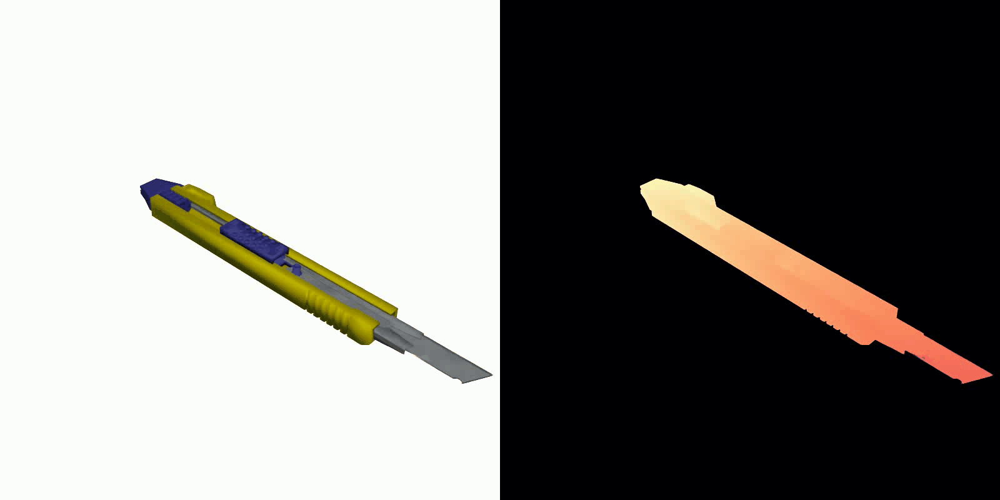
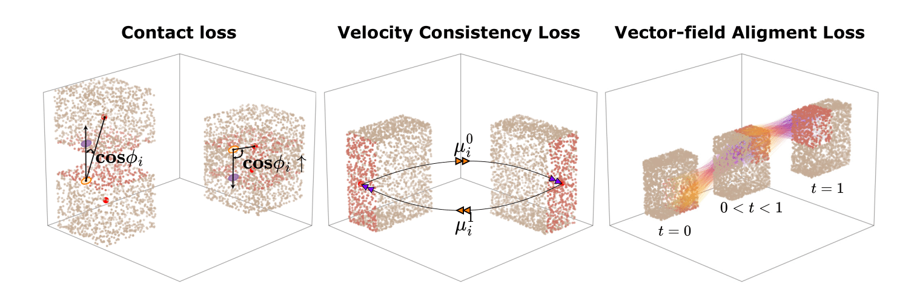
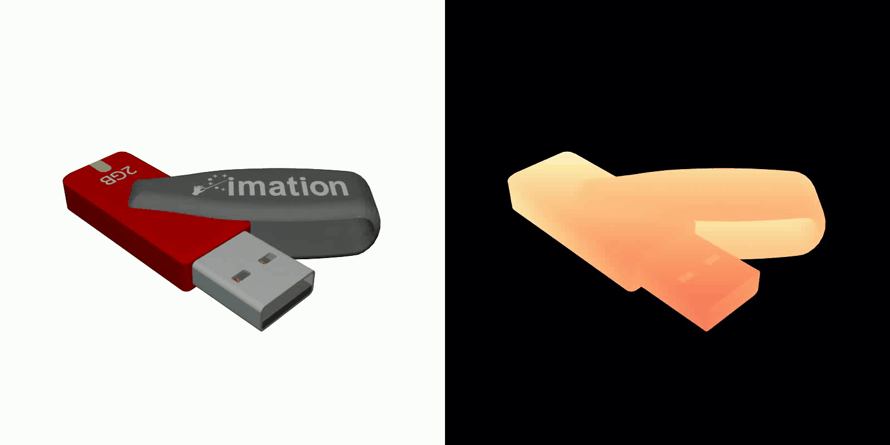
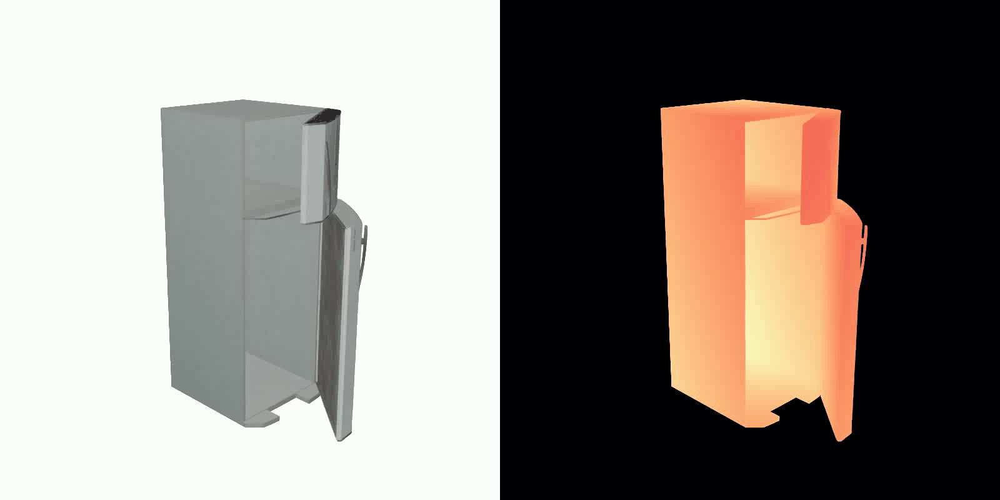
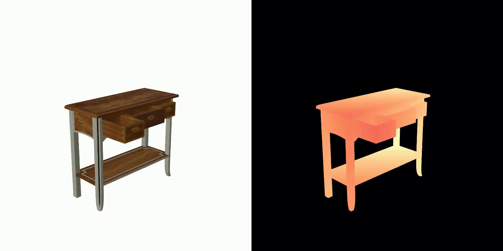
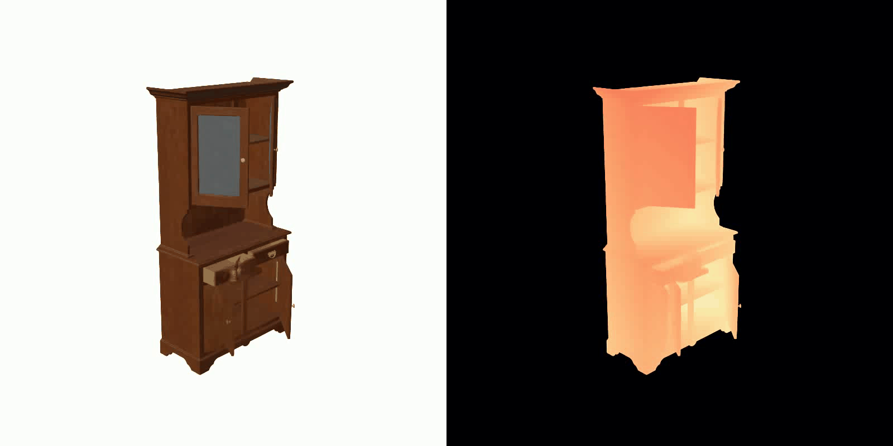

- A part-aware Gaussian representation models articulated digital twins. We introduce Part²GS, a framework for multi-part objects with high-fidelity geometry and physically consistent articulation. Articulated components carry learnable attributes that enable structured, disentangled transformations while preserving the reconstructed geometry.
- A motion-aware canonical representation enforces physically consistent motion. Contact enforcement, velocity consistency, and vector-field alignment constrain articulation, encouraging components to move coherently while maintaining their spatial relationships.
- A field of repel points prevents collisions between parts. Repulsion discourages inter-part collisions and stabilizes articulation paths, improving motion coherence over the evaluated baselines.
- Synthetic and real-world evaluations assess geometry and articulation. Part²GS consistently outperforms state-of-the-art methods, with improvements of up to tenfold in Chamfer Distance for movable parts.
TL;DR
We introduce Part²GS, which jointly discovers articulated parts and learns their motion from multi-view images at two object states. Each 3D Gaussian carries a learnable part identity in a motion-aware canonical representation. Contact, velocity, and vector-field constraints keep articulation coherent, while a field of repel points prevents collisions between parts.


Abstract
Articulated objects are common in the real world, yet modeling their structure and motion remains a challenging task for 3D reconstruction methods. In this work, we introduce Part²GS a novel framework for modeling articulated digital twins of multi-part objects with high-fidelity geometry and physically consistent articulation. Part²GS leverages a part-aware 3D Gaussian representation that encodes articulated components with learnable attributes, enabling structured, disentangled transformations that preserve high-fidelity geometry. To ensure physically consistent motion, we propose a motion-aware canonical representation guided by physics-based constraints, including contact enforcement, velocity consistency, and vector-field alignment. Furthermore, we introduce a field of repel points to prevent part collisions and maintain stable articulation paths, significantly improving motion coherence over baselines. Extensive evaluations on both synthetic and real-world datasets show that Part²GS consistently outperforms state-of-the-art methods by up to 10x in Chamfer Distance for movable parts.
Contributions
Part²GS Method
Part2GS constructs articulated 3D objects from multi-view images using 3D Gaussian Splatting for joint part discovery and motion modeling. The framework consists of two stages: (1) Part-Aware Gaussian Generation: We generate canonical Gaussian representations independently for each joint state (𝓘₀, 𝓘₁) and subsequently infer per-Gaussian part identities implicitly through multi-view geometric cues. Specifically, each Gaussian 𝓖ᵢ is augmented with a compact, learnable part-identification parameter ψi that enables unsupervised clustering of Gaussians into meaningful, physically consistent parts. (2) Articulation Learning: Once the part-aware canonical Gaussian representation is learned, we model the transformations of each articulated part using SE(3) rigid body motions.

To ensure stable and interpretable motion, we additionally introduce physical constraints including contact regularization, velocity consistency, and vector-field alignment. These physical constraints provide a simple yet effective regularization against self-collision while keeping per-part motion rigid and coherent.
Quantitative Results
Articulated reconstruction: simulation and real scenes
Quantitative Results on Paris. Lower (↓) is better across all metrics. Objects with * are seen categories trained in Ditto. F indicates wrong motion type predictions. Pos Err is omitted for objects with only prismatic joints (Blade, Storage*, and Real-Storage).
| Method | Foldchair | Fridge | Laptop* | Oven* | Scissor | Stapler | USB | Washer | Blade | Storage* | Real-Fridge | Real-Storage |
|---|---|---|---|---|---|---|---|---|---|---|---|---|
| Angular error ↓ | ||||||||||||
| Ditto | 89.35 | 89.30 | 3.12 | 0.96 | 4.50 | 89.86 | 89.77 | 89.51 | 79.54 | 6.32 | 1.71 | 5.88 |
| PARIS | 19.05 | 7.87 | 0.03 | 9.21 | 22.34 | 8.89 | 0.82 | 22.18 | 50.45 | 0.03 | 9.92 | 77.83 |
| DTA | 0.03 | 0.09 | 0.07 | 0.22 | 0.10 | 0.07 | 0.11 | 0.36 | 0.20 | 0.09 | 2.08 | 13.64 |
| ArtGS | 0.01 | 0.03 | 0.01 | 0.01 | 0.05 | 0.01 | 0.04 | 0.02 | 0.03 | 0.01 | 2.09 | 3.47 |
| Part²GS (Ours) | 0.01 | 0.01 | 0.01 | 0.01 | 0.02 | 0.01 | 0.01 | 0.01 | 0.01 | 0.02 | 0.03 | 1.24 |
| Position error ↓ | ||||||||||||
| Ditto | 3.77 | 1.02 | 0.01 | 0.13 | 5.70 | 0.20 | 5.41 | 0.66 | — | — | 1.84 | — |
| PARIS | 0.35 | 3.13 | 0.04 | 0.07 | 2.59 | 7.67 | 6.35 | 4.05 | — | — | 1.50 | — |
| DTA | 0.01 | 0.01 | 0.01 | 0.01 | 0.02 | 0.02 | 0.00 | 0.05 | — | — | 0.59 | — |
| ArtGS | 0.00 | 0.00 | 0.01 | 0.00 | 0.00 | 0.01 | 0.00 | 0.00 | — | — | 0.47 | — |
| Part²GS (Ours) | 0.00 | 0.00 | 0.00 | 0.00 | 0.00 | 0.01 | 0.00 | 0.00 | — | — | 0.13 | — |
| Motion error ↓ | ||||||||||||
| Ditto | 99.36 | F | 5.18 | 2.09 | 19.28 | 56.61 | 80.60 | 55.72 | F | 0.09 | 8.43 | 0.38 |
| PARIS | 166.24 | 102.34 | 0.03 | 28.18 | 124.38 | 117.71 | 167.98 | 126.77 | 0.38 | 0.36 | 2.68 | 0.58 |
| DTA | 0.10 | 0.12 | 0.11 | 0.12 | 0.37 | 0.08 | 0.15 | 0.28 | 0.00 | 0.00 | 1.85 | 0.14 |
| ArtGS | 0.03 | 0.04 | 0.02 | 0.02 | 0.04 | 0.01 | 0.03 | 0.03 | 0.00 | 0.00 | 1.94 | 0.04 |
| Part²GS (Ours) | 0.01 | 0.01 | 0.01 | 0.00 | 0.01 | 0.00 | 0.01 | 0.02 | 0.00 | 0.00 | 0.72 | 0.02 |
| Static geometry: Chamfer distance ↓ | ||||||||||||
| Ditto | 33.79 | 3.05 | 0.25 | 2.52 | 39.07 | 41.64 | 2.64 | 10.32 | 46.90 | 9.18 | 47.01 | 16.09 |
| PARIS | 11.21 | 11.78 | 0.17 | 3.58 | 17.88 | 4.79 | 2.41 | 15.92 | 2.24 | 9.83 | 13.79 | 23.92 |
| DTA | 0.18 | 0.62 | 0.30 | 4.60 | 3.55 | 2.91 | 2.32 | 4.56 | 0.55 | 4.90 | 2.36 | 10.98 |
| ArtGS | 0.26 | 0.52 | 0.63 | 3.88 | 0.61 | 3.83 | 2.25 | 6.43 | 0.54 | 7.31 | 1.64 | 2.93 |
| Part²GS (Ours) | 0.14 | 0.41 | 0.15 | 2.91 | 0.48 | 2.36 | 1.84 | 3.92 | 0.42 | 3.58 | 1.29 | 2.12 |
| Movable geometry: Chamfer distance ↓ | ||||||||||||
| Ditto | 141.11 | 0.99 | 0.19 | 0.94 | 20.68 | 31.21 | 15.88 | 12.89 | 195.93 | 2.20 | 50.60 | 20.35 |
| PARIS | 24.23 | 12.88 | 0.17 | 7.49 | 18.89 | 38.42 | 13.81 | 379.40 | 200.24 | 63.97 | 91.72 | 528.83 |
| DTA | 0.15 | 0.27 | 0.13 | 0.44 | 10.11 | 1.13 | 1.47 | 0.45 | 2.05 | 0.36 | 1.12 | 30.78 |
| ArtGS | 0.54 | 0.21 | 0.13 | 0.89 | 0.64 | 0.52 | 1.22 | 0.45 | 1.12 | 1.02 | 0.66 | 6.28 |
| Part²GS (Ours) | 0.12 | 0.18 | 0.11 | 0.38 | 0.51 | 0.41 | 1.05 | 0.39 | 1.42 | 0.78 | 0.55 | 5.01 |
| Whole geometry: Chamfer distance ↓ | ||||||||||||
| Ditto | 6.80 | 2.16 | 0.31 | 2.51 | 1.70 | 2.38 | 2.09 | 7.29 | 42.04 | 3.91 | 6.50 | 14.08 |
| PARIS | 8.22 | 9.31 | 0.28 | 5.44 | 6.13 | 9.62 | 2.14 | 14.35 | 0.76 | 9.62 | 11.52 | 38.94 |
| DTA | 0.27 | 0.70 | 0.32 | 4.24 | 0.41 | 1.92 | 1.17 | 4.48 | 0.36 | 3.99 | 2.08 | 8.98 |
| ArtGS | 0.43 | 0.58 | 0.50 | 3.58 | 0.67 | 2.63 | 1.28 | 5.99 | 0.61 | 5.21 | 1.29 | 3.23 |
| Part²GS (Ours) | 0.19 | 0.43 | 0.20 | 1.85 | 0.42 | 1.45 | 0.92 | 3.45 | 0.35 | 2.87 | 1.03 | 2.78 |
Objects with multiple articulated parts
Results on DTA-Multi and ArtGS-Multi. Lower (↓) is better across all metrics. Pos Err is omitted for objects with only prismatic joints.
| Method | Fridge · 3 parts | Table · 4 parts | Table · 5 parts | Storage · 3 parts | Storage · 4 parts | Storage · 7 parts | Oven · 4 parts |
|---|---|---|---|---|---|---|---|
| Angular error ↓ | |||||||
| DTA | 0.16 | 24.35 | 20.62 | 0.29 | 51.18 | 19.07 | 17.83 |
| ArtGS | 0.01 | 1.16 | 0.04 | 0.02 | 0.02 | 0.14 | 0.04 |
| Part²GS (Ours) | 0.01 | 0.08 | 0.03 | 0.01 | 0.01 | 0.11 | 0.03 |
| Position error ↓ | |||||||
| DTA | 0.01 | — | 4.2 | 0.04 | 2.44 | 0.31 | 6.51 |
| ArtGS | 0.00 | — | 0.00 | 0.01 | 0.00 | 0.02 | 0.01 |
| Part²GS (Ours) | 0.00 | — | 0.00 | 0.00 | 0.00 | 0.01 | 0.01 |
| Motion error ↓ | |||||||
| DTA | 0.16 | 0.12 | 30.8 | 0.07 | 43.77 | 10.67 | 31.80 |
| ArtGS | 0.03 | 0.00 | 0.01 | 0.01 | 0.03 | 0.62 | 0.23 |
| Part²GS (Ours) | 0.02 | 0.00 | 0.01 | 0.01 | 0.02 | 0.55 | 0.18 |
| Static Chamfer distance ↓ | |||||||
| DTA | 0.63 | 0.59 | 1.39 | 0.86 | 5.74 | 0.82 | 1.17 |
| ArtGS | 0.62 | 0.74 | 1.22 | 0.78 | 0.75 | 0.67 | 1.08 |
| Part²GS (Ours) | 0.59 | 0.56 | 1.18 | 0.73 | 0.68 | 0.61 | 1.01 |
| Movable Chamfer distance ↓ | |||||||
| DTA | 0.48 | 104.38 | 230.38 | 0.23 | 246.63 | 476.91 | 359.16 |
| ArtGS | 0.13 | 3.53 | 3.09 | 0.23 | 0.13 | 3.70 | 0.25 |
| Part²GS (Ours) | 0.08 | 1.95 | 1.85 | 0.09 | 0.07 | 1.83 | 0.11 |
| Whole-object Chamfer distance ↓ | |||||||
| DTA | 0.88 | 0.55 | 1.00 | 0.97 | 0.88 | 0.71 | 1.01 |
| ArtGS | 0.75 | 0.74 | 1.16 | 0.93 | 0.88 | 0.70 | 1.03 |
| Part²GS (Ours) | 0.73 | 0.51 | 1.10 | 0.87 | 0.80 | 0.63 | 0.95 |
Ablation Studies
Component ablations
| Configuration | Angular error ↓ | Position error ↓ | Motion error ↓ | Static CD ↓ | Movable CD ↓ | Whole CD ↓ |
|---|---|---|---|---|---|---|
| Table · 5 parts | ||||||
| Without part parameters | 0.21 | 0.08 | 7.32 | 7.35 | 145.17 | 3.10 |
| Without repel points | 0.09 | 0.16 | 0.48 | 1.19 | 4.82 | 1.85 |
| Without physical constraints | 0.05 | 0.03 | 0.18 | 1.32 | 4.47 | 1.65 |
| Without canonical initialization | 0.14 | 0.06 | 6.32 | 2.47 | 117.25 | 2.62 |
| Part²GS (all) | 0.03 | 0.00 | 0.01 | 1.18 | 1.85 | 1.10 |
| Storage · 7 parts | ||||||
| Without part parameters | 0.26 | 0.11 | 10.43 | 2.95 | 198.67 | 3.54 |
| Without repel points | 0.16 | 0.14 | 1.32 | 0.93 | 7.43 | 2.04 |
| Without physical constraints | 0.04 | 0.05 | 0.04 | 1.22 | 4.54 | 1.12 |
| Without canonical initialization | 22.15 | 0.93 | 19.67 | 0.79 | 442.32 | 1.89 |
| Part²GS (all) | 0.11 | 0.01 | 0.55 | 0.61 | 1.83 | 0.63 |
Component ablations on Table (5 parts) and Storage (7 parts). Lower values are better for all metrics. Removing individual components causes large errors on these complex objects; severe failures exceed five times the full model’s error for the same object.
Qualitative Results



Rendering Results of Simple (two-parts) objects. Each example shows smooth articulation between rigid parts with accurate motion boundaries and minimal distortion. Our method captures part-aware geometry and consistent transformations, even in minimal degrees of freedom, demonstrating the effectiveness of Part²GS in simple settings.





Rendering Results of Complex (Multi-parts) objects. Our method captures accurate part-aware geometry and consistent transformations, even for complex objects, demonstrating the effectiveness of Part²GS.
BibTeX
@inproceedings{yu2025part2gspartawaremodelingarticulated,
title={Part$^{2}$GS: Part-aware Modeling of Articulated Objects using 3D Gaussian Splatting},
author={Yu, Tianjiao and Shah, Vedant and Wahed, Muntasir and Shen, Ying and Nguyen, Kiet A. and Lourentzou, Ismini},
booktitle={Proceedings of the IEEE/CVF Conference on Computer Vision and Pattern Recognition (CVPR)},
year={2026}
}Template acknowledgements
This site is built upon the work of Nerfies, made available under the Creative Commons Attribution-ShareAlike 4.0 International License. We gratefully acknowledge 3DGS and ArtGS for open-sourcing their projects.